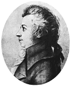

5 декабря 1791 г. в 0:55, не дожив двух месяцев до своего 36-летия, скончался великий композитор и музыкант Вольфганг Амадей Моцарт. Несмотря на огромное количество исследований и публикаций, причина смерти Моцарта до сих пор остаётся неясной. Ниже изложены наиболее обоснованные и общепризнанные гипотезы.
5 декабря 1791 г. в 0:55, не дожив двух месяцев до своего 36-летия, скончался великий композитор и музыкант Вольфганг Амадей Моцарт. Данная статья представляет собой попытку рассмотреть доступные нам факты и гипотезы о смерти композитора с точки зрения современной медицины.

Анамнез жизни
Пациент М., возраст 35 лет, пол мужской, рост 154 см, телосложение нормостеническое, профессия — музыкант и композитор, скончался от заболевания неясной этиологии.
Семейный анамнез
Отец пациента умер в 67 лет, предположительно от сердечно-сосудистой патологии, мать — в 58 лет, предположительно от острой кишечной инфекции.
Медицинский анамнез
В возрасте 10 лет пациент перенёс несколько тяжёлых эпизодов острой инфекции верхних дыхательных путей, сопровождавшихся выраженным повышением температуры тела, болями в горле и суставным синдромом. В 11 лет пациент перенёс натуральную оспу, в 16 лет — эпизод желтухи. В последующем пациент неоднократно отмечал рецидивирующие суставные и абдоминальные боли.
Пациент курил трубку (периодически), в отдельные периоды жизни злоупотреблял алкоголем.
Анамнез заболевания
За несколько недель до смерти у пациента отмечалась депрессия, головные боли и потеря веса. В последние 2 недели он жаловался на общую слабость, повышение температуры тела, боли в животе, рвоту, жидкий стул и распространённые отёки. Пациент находился в сознании вплоть до последних часов, когда он впал в кому. Посмертное обследование тела не выявило каких-либо следов насилия. Вскрытие не производилось.
Зафиксированная причина смерти
Диагноз, поставленный Моцарту, звучал как «острая потница». Уильям Ослер в 1892 г. характеризовал данное заболевание как инфекцию неясной этиологии, проявляющуюся повышением температуры тела, обильным потоотделением и появлением на коже распространённой везикулярной сыпи. В тяжёлых случаях инфекция могла сопровождаться нарушением сознания, лихорадкой и геморрагиями. Всё вышеописанное соответствует клинической симптоматике, отмечавшейся у Моцарта, однако подобный диагноз в наше время может рассматриваться лишь как описание определённого симптома (распространённая везикулярная сыпь) и не проливает свет на истинную причину смерти композитора.
Несмотря на огромное количество исследований и публикаций, причина смерти Моцарта до сих пор остаётся неясной. Несовершенство диагностических средств тех лет, не позволившее поставить точный диагноз, усугубляется отсутствием данных аутопсии. В то же время, целым рядом исследователей, включая современных, предпринимались попытки определить причину смерти великого композитора. Ниже изложены наиболее обоснованные и общепризнанные гипотезы.
Ревматизм
По свидетельствам современников, Моцарт был болезненным ребёнком. В детском возрасте он неоднократно переносил инфекции верхних дыхательных путей, сопровождавшиеся повышением температуры тела, болями в горле и суставах, что соответствует симптоматике стрептококковой инфекции. В подобных условиях вероятным представляется развитие у композитора ревматизма, который мог в дальнейшем привести к поражению почек и возникновению почечной недостаточности. Данная гипотеза поддерживается многими исследователями, однако, она не объясняет хронической персистирующей симптоматики, отмечавшейся у Моцарта в течение последнего года жизни.
Согласно другой теории, причиной смерти композитора стал геморрагический васкулит (болезнь Шенлейн-Геноха), развившийся в результате перенесённой стрептококковой инфекции. По мнению специалистов, частота поражения почек при указанном заболевании у взрослых достигает 61%, причём до 30% пациентов, у которых развился нефрит, умирают, преимущественно от почечной недостаточности. Основным возражением данному диагнозу служит отсутствие каких-либо упоминаний о появлении у Моцарта геморрагических высыпаний, типичных для болезни Шенлейн-Геноха.
Отравление
Умирая, Моцарт говорил, что его отравили. Вдова композитора, Констанция, также верила в эту теорию. Кому было нужно убивать Моцарта?
Основным подозреваемым считается Сальери, популярный в то время композитор. Его талант явно уступал таланту Моцарта, и между композиторами существовало своего рода соперничество, обыгранное во многих художественных книгах и кинофильмах. Ещё одним фактом в поддержку этой гипотезы считается признание Сальери, сделанное им перед смертью в клинике для душевнобольных.
В числе других возможных причин убийства Моцарта ряд исследователей называют раскрытие им секретов масонов, к числу которых он относился, в опере «Волшебная флейта».
Однако, если принять гипотезу об отравлении, какой яд мог вызвать подобную симптоматику? Отравление ртутью, широко использовавшейся в то время в лечении венерических заболеваний, действительно, могло привести к развитию почечной недостаточности и отёков, отмечавшихся у Моцарта перед смертью. В то же время нет доказательств как перенесённых Моцартом венерических заболеваний, так и его лечения данным веществом. Кроме того, отравление ртутью сопровождается развитием выраженного тремора, который также отсутствовал у композитора.
Острая эпидемическая инфекция
По свидетельствам современников, во время смерти Моцарта в Вене бушевала эпидемия высококонтагиозной и летальной инфекции, этиология которой до сих пор остаётся неизвестной.
Трихинеллез
Отдельные исследователи считают причиной смерти Моцарта трихинеллёз, симптоматика которого (повышение температуры тела, отёки и боли в конечностях) близка к отмечавшейся у Моцарта. Кроме того, в письме к жене за 6 недель до смерти Моцарт упоминает, что ел свиные котлеты, которые и могли стать источником инфекции. Интервал времени в 6 недель соответствует инкубационному периоду трихинеллёза. В то же время, патогномоничный симптом данной инфекции — миалгии — у Моцарта отсутствовал.
Субдуральная гематома в результате перелома костей черепа
Одной из наиболее шокирующих стала гипотеза о смерти Моцарта в результате перелома костей черепа, осложнившегося развитием хронической субдуральной гематомы. Какие факты легли в основу данной теории?
После смерти в 1791 г. Моцарт был похоронен в общей могиле. Существует легенда, что одни из могильщиков, знавший композитора, пометил его тело, обвив вокруг шеи веревку. Спустя десятилетие он выкопал и увёз череп, предположительно принадлежавший Моцарту. Дальнейшая судьба черепа остаётся неясной, однако в 1902 г. череп, предположительно принадлежавший композитору, был помещён в экспозицию музея Моцарта в Зальцбурге.
Интерес к черепу Моцарта возобновился в 1991 г., после выявления французским антропологом P.-F. Puech следов частично зажившего пролома, который мог привести к возникновению субдуральной гематомы. Хотя прямых свидетельств перенесённой композитором травмы нет, подобный вариант нельзя исключить.
Однако, действительно ли данный череп принадлежит Моцарту? Исследователям из Института патологии вооруженных сил США удалось выделить фрагмент ДНК из тканей черепа и 2 фрагмента из предположительных костных останков племянницы и бабушки Моцарта. Хотя исследование ДНК показало, что череп принадлежал мужчине, родственная связь между лицами, у которых были взяты образцы, не подтвердилась, таким образом, принадлежность черепа Моцарту остаётся под вопросом. Не исключено, что череп всё же принадлежал композитору, однако для подтверждения данной теории необходимо ДНК близких кровных родственников композитора.
Помимо вышеизложенных теорий и гипотез, существует множество других, называющих в числе возможных причин смерти Моцарта сифилис, тиф, инсульт и др., однако после более 200 лет, прошедших с момента смерти композитора, как подтвердить, так и опровергнуть большинство из них не представляется возможным.
Таблица 1. Предположительные причины смерти Моцарта
| Предположительный диагноз | Основания | Комментарии |
|---|
| Осложнения перенесённой в детском возрасте стрептококковой инфекции |
Множественные эпизоды тонзиллофарингита в детском возрасте, сопровождавшиеся повышением температуры тела и суставными болями. |
Стрептококковая инфекция верхних дыхательных путей могла привести к возникновению таких осложнений как ревматизм и гломерулонефрит с последующим развитием почечной недостаточности. |
| Убийство (отравление) |
Моцарт и его вдова верили, что композитора отравил Сальери. |
Перед смертью, находясь в психически нестабильном состоянии, Сальери признался в отравлении Моцарта. |
| Трихинеллёз |
Симптоматика схожа с отмечавшейся у Моцарта. |
У Моцарта отсутствовали миалгии, которые являются патогномоничным симптомом трихинеллёза. |
| Субдуральная гематома вследствие перелома костей черепа |
На черепе, предположительно принадлежавшем Моцарту, обнаружены следы перелома костей. |
ДНК анализ и другие современные методики исследования не смогли подтвердить принадлежность черепа. |
| Острая эпидемическая инфекция |
Во время смерти Моцарта в Вене была в разгаре эпидемия инфекции, унесшая много жизней. |
Микроорганизм, вызвавший данную эпидемию, до сих пор неизвестен. |
The Death of a Male Musician With a Mysterious Malady
Medscape